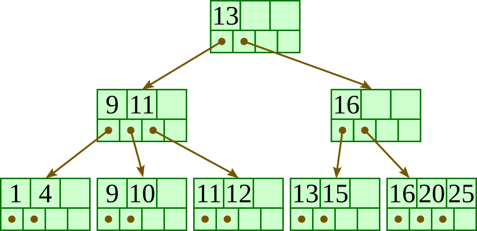
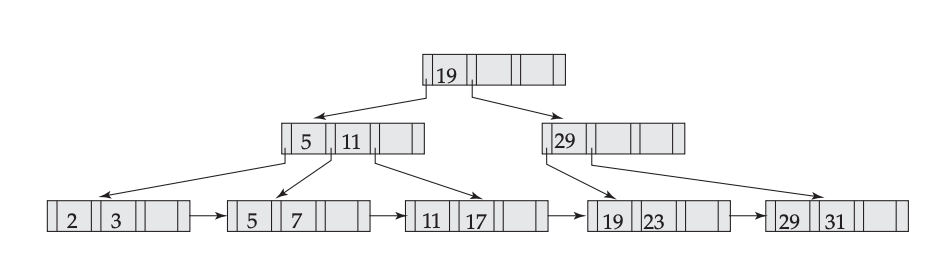
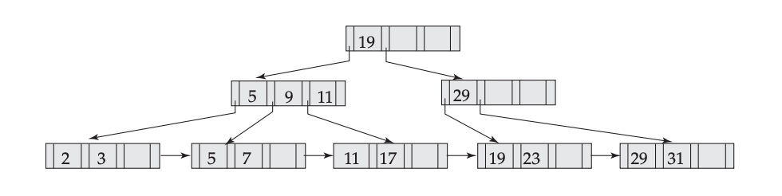
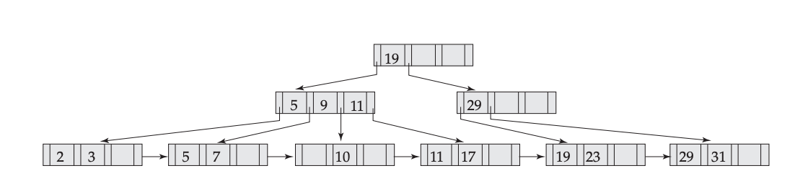
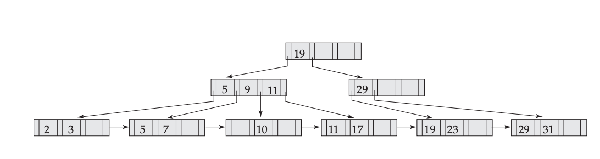
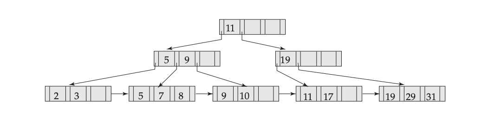
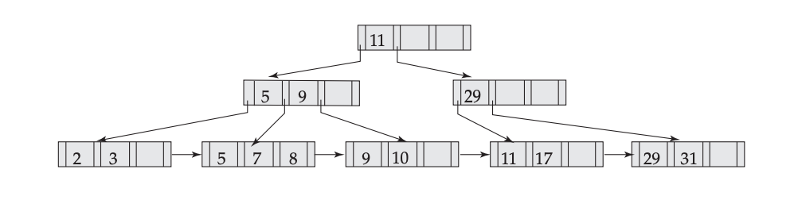

What is a B+-tree
Most queries can be executed more quickly if the values are stored in order. But it’s not practical to hope to store all the rows in the table one after another, in sorted order, because this requires rewriting the entire table with each insertion or deletion of a row.
This leads us to instead imagine storing our rows in a tree structure. Our first instinct would be a balanced binary search tree like a red-black tree, but this really doesn’t make much sense for a database since it is stored on disk. You see, disks work by reading and writing whole blocks of data at once — typically 512 bytes or four kilobytes. A node of a binary search tree uses a small fraction of that, so it makes sense to look for a structure that fits more neatly into a disk block.
Hence the B+-tree, in which each node stores up to $d$ references to children and up to $d$ − 1 keys. Each reference is considered “between” two of the node’s keys; it references the root of a subtree for which all values are between these two keys.
Here is a fairly small tree using 4 as our value for $d$.

A B+-tree requires that each leaf be the same distance from the root, as in this picture, where searching for any of the 11 values (all listed on the bottom level) will involve loading three nodes from the disk (the root block, a second-level block, and a leaf).
In practice, d will be larger — as large, in fact, as it takes to fill a disk block. Suppose a block is 4KB, our keys are 4-byte integers, and each reference is a 6-byte file offset. Then we’d choose d to be the largest value so that 4 (d − 1) + 6 d ≤ 4096; solving this inequality for d, we end up with d ≤ 410, so we’d use 410 for d. As you can see, d can be large.
A B+-tree maintains the following invariants:
Every node has one more references than it has keys.
All leaves are at the same distance from the root.
For every non-leaf node $N$ with $k$ being the number of keys in $N$: all keys in the first child’s subtree are less than $N’s$ first key; and all keys in the ith child’s subtree (2 ≤ $i$ ≤ $k$) are between the ($i$ − 1)th key of n and the ith key of n.
The root has at least two children.
Every non-leaf, non-root node has at least $\lceil d / 2 \rceil$ children.
Each leaf contains at least $\lceil d / 2 \rceil$ keys.
Every key from the table appears in a leaf, in left-to-right sorted order.
| Node Type | Children Type | Min Number of Children | Max Number of Children | Example ($b$ = 7) |
Example ($b$ = 100) |
|---|---|---|---|---|---|
| Root Node (when it is the only node in the tree) | Records | 1 | $d$ - 1 | 1-6 | 1–99 |
| Root Node | Internal Nodes or Leaf Nodes | 2 | $d$ | 2–7 | 2–100 |
| Internal Node | Internal Nodes or Leaf Nodes | $\lceil d / 2 \rceil$ | $d$ | 4–7 | 50–100 |
| Leaf Node | Records | $\lceil d / 2 \rceil$ | $d$ | 4–7 | 50–100 |
Insertion
Descend to the leaf where the key fits.
- If the node has an empty space, insert the key/reference pair into the node.
- If the node is already full, split it into two nodes, distributing the keys evenly between the two nodes. If the node is a leaf, take a copy of the minimum value in the second of these two nodes and repeat this insertion algorithm to insert it into the parent node. If the node is a non-leaf, exclude the middle value during the split and repeat this insertion algorithm to insert this excluded value into the parent node.
Deletion
Descend to the leaf where the key exists.
- Remove the required key and associated reference from the node.
- If the node still has enough keys and references to satisfy the invariants, stop.
- If the node has too few keys to satisfy the invariants, but its next oldest or next youngest sibling at the same level has more than necessary, distribute the keys between this node and the neighbor. Repair the keys in the level above to represent that these nodes now have a different “split point” between them; this involves simply changing a key in the levels above, without deletion or insertion.
- If the node has too few keys to satisfy the invariant, and the next oldest or next youngest sibling is at the minimum for the invariant, then merge the node with its sibling; if the node is a non-leaf, we will need to incorporate the “split key” from the parent into our merging. In either case, we will need to repeat the removal algorithm on the parent node to remove the “split key” that previously separated these merged nodes — unless the parent is the root and we are removing the final key from the root, in which case the merged node becomes the new root (and the tree has become one level shorter than before).
Example
Initial:

Insert 9:

Insert 10:

Insert 8:

Delete 23:

Delete 19:
